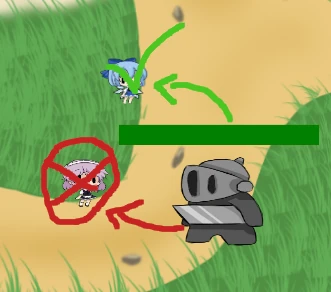

Tutaj znajdziesz poradniki!
1. Atakowanie przeciwników
Gdy przeciwnik znajduje się w zasięgu wieży atakuje go wieża
2. Ulepszanie wież
Wieżę można ulepszać klikając na nią i naciskając na guziki odpowiadające za ulepszanie
3. Statystyki wież
Każda wieża posiada statystyki takie jak
- Obrażenia
- Prędkość ataku
- Zasięg
- Koszt postawienia

4. Statystyki potworów
Część przeciwników posiada pancerz który procentowo chroni ich przed obrażeniami, aby radzić sobie z tego typu przeciwnikami należy postawić wieżę która zadaje magiczne obrażenia lub ulepszyć wieżę, żeby była w stanie przebić pancerz przeciwnika
